Administrative Operations Assistant
I help businesses stay organized through administrative support, lead generation, supplier sourcing, CRM management, documentation, procurement support, and e-commerce operations.
View PortfolioDetail-oriented Administrative Operations Assistant with experience in supplier sourcing, lead research, CRM management, procurement support, documentation, email marketing, customer support, and e-commerce operations. I enjoy building organized systems that save time and improve business efficiency.
Actual work samples from supplier sourcing, CRM management, administrative operations, procurement documentation, and e-commerce support.
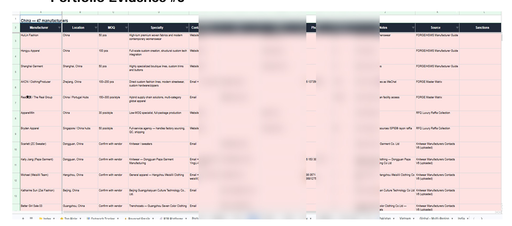
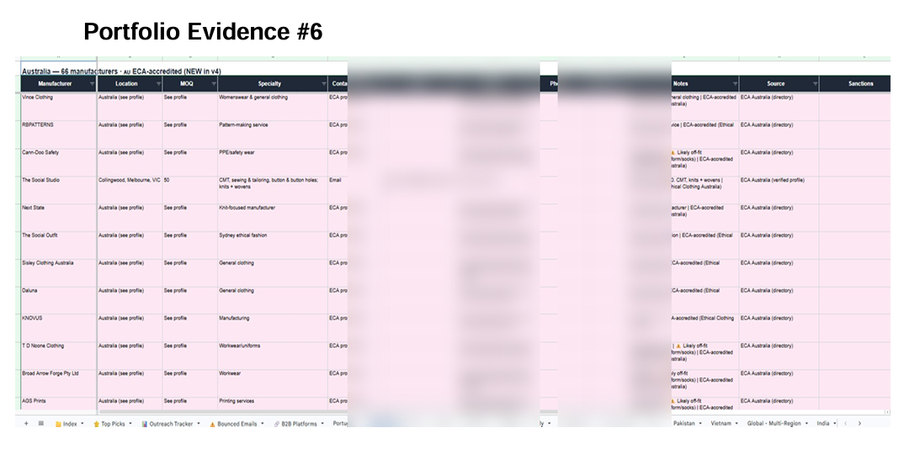
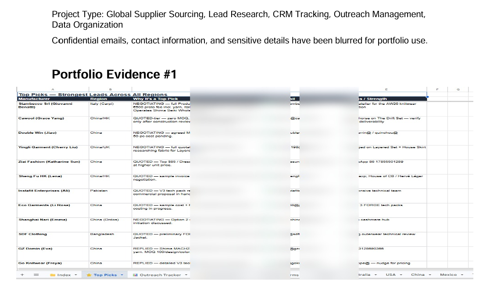
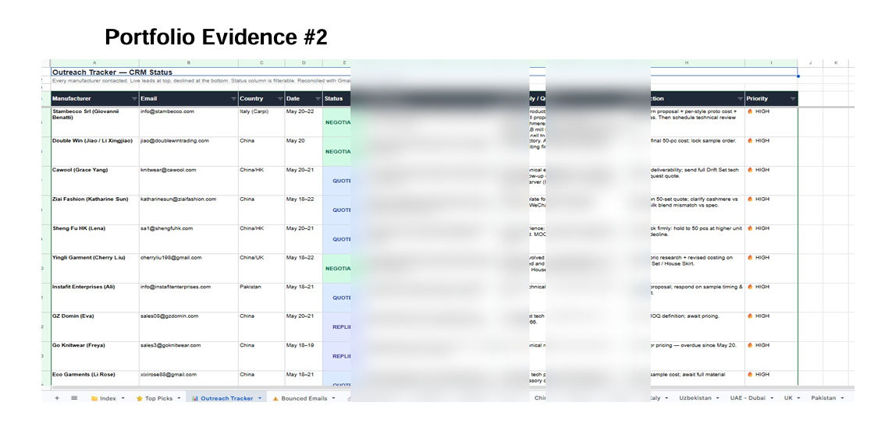
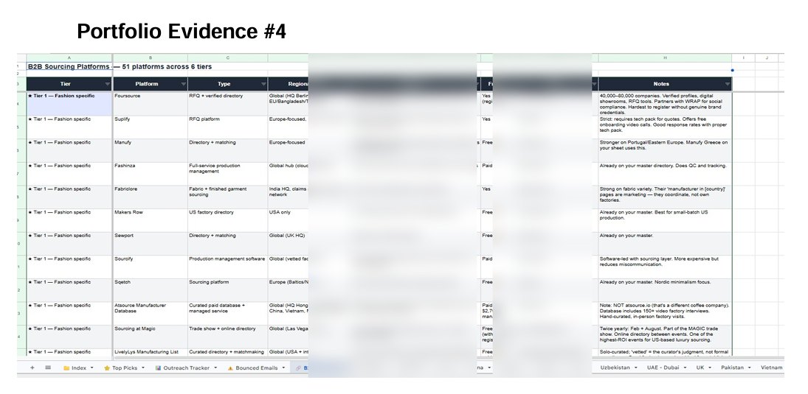
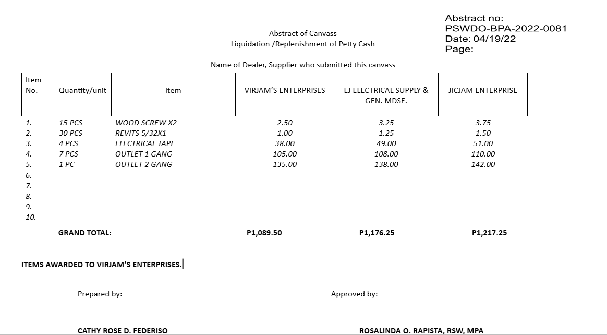
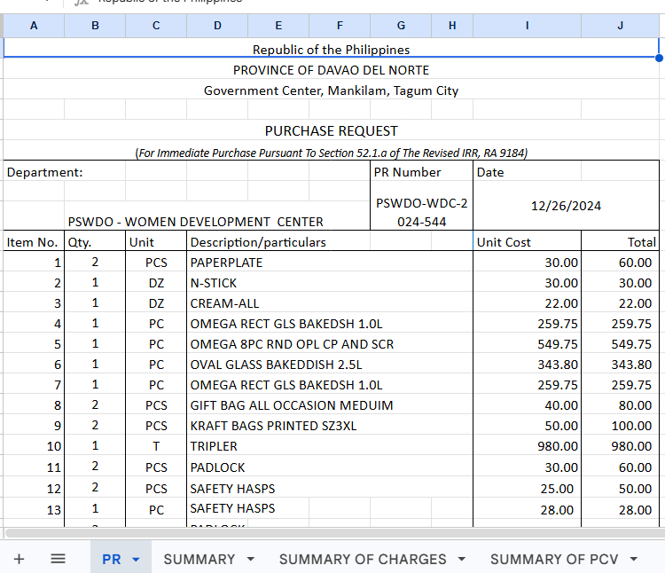
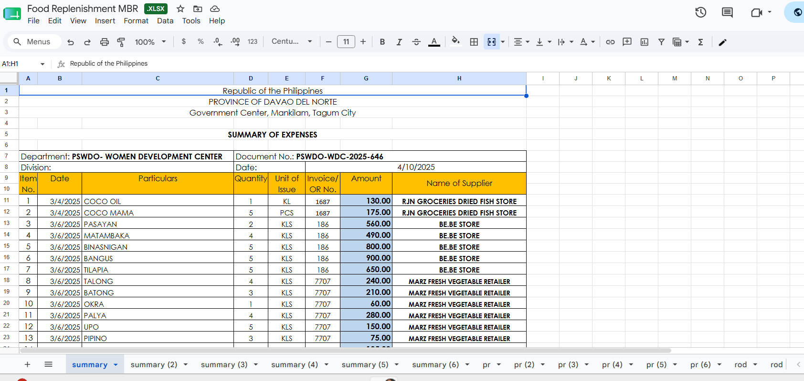
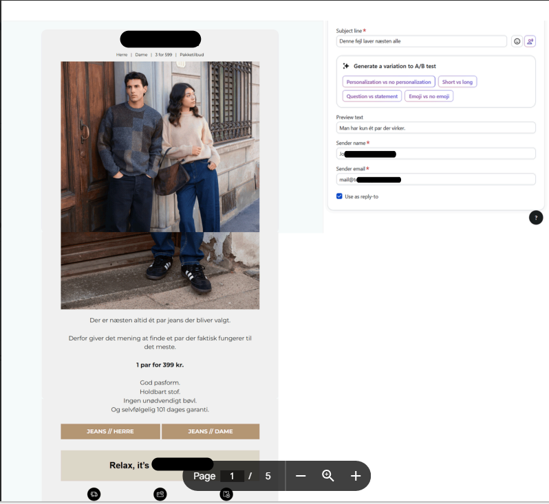
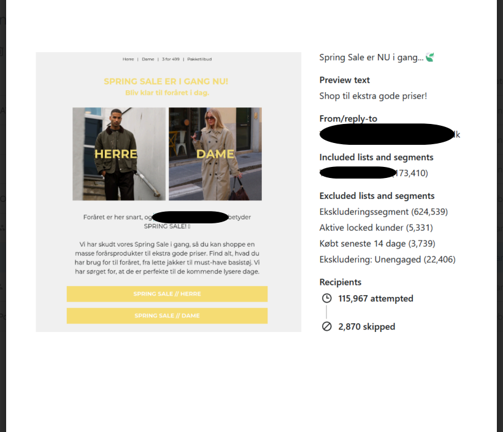
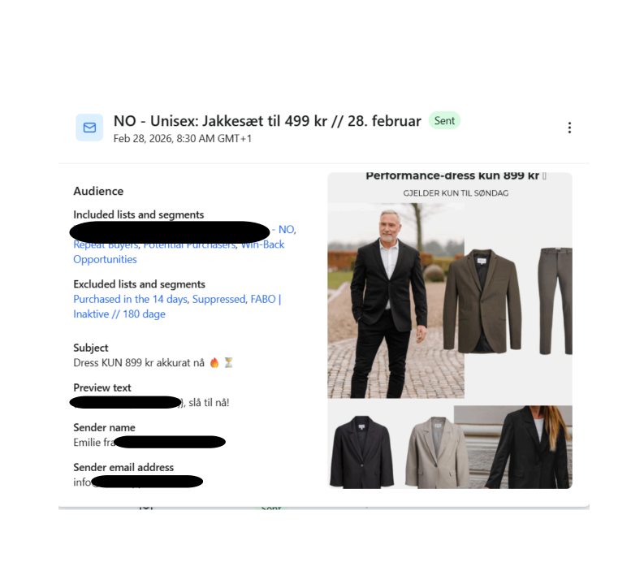
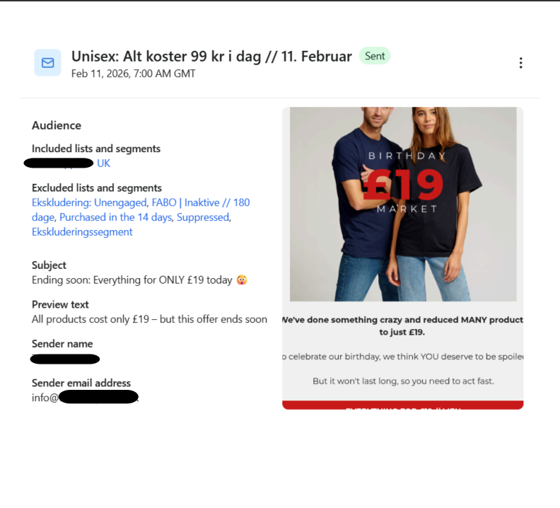
Open for Administrative Support, Lead Generation, Research, Customer Support and E-commerce opportunities.
📧 cathyfederiso08@gmail.com
📱 +63 915 243 6568
📍 Philippines